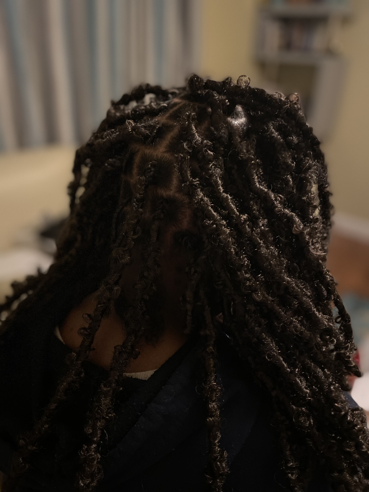
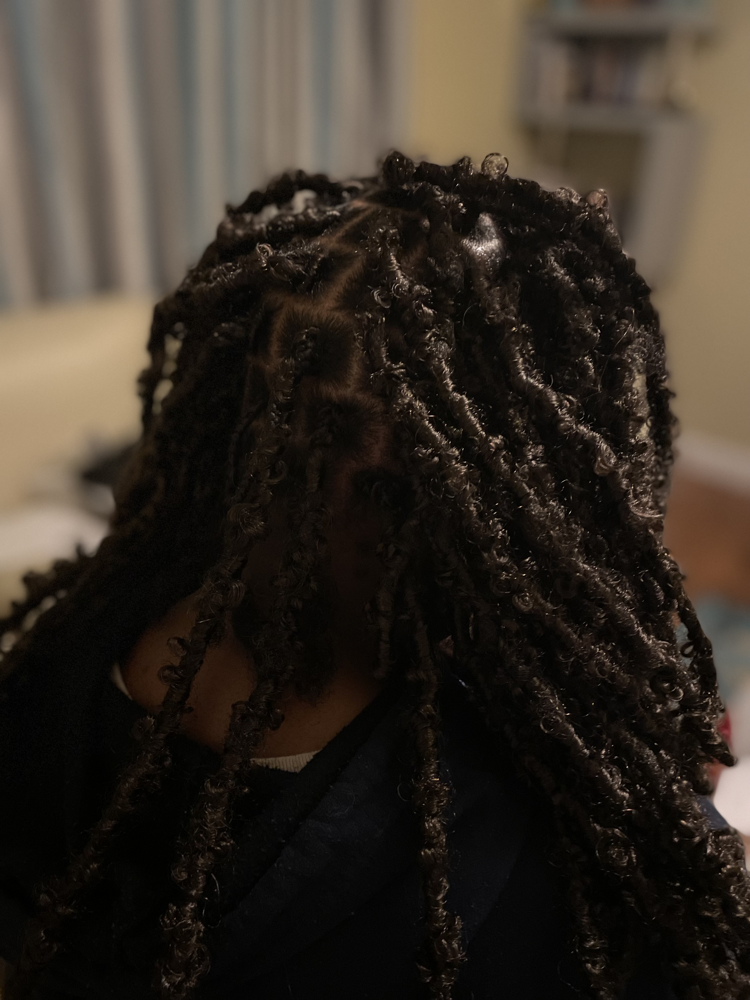

SERVICE GALLERY
 
Boho Braids: Effortless & Chic Boho Braids blend a carefree, relaxed vibe with elegant detail. With their loose, undone appearance and playful accessories, they add texture and volume to any hair type. Perfect for casual outings or special events, Boho Braids offer an easy, chic style that suits every occasion.
Cornrows: Bold & Timeless Cornrows are sleek, tight braids woven close to the scalp, offering a stylish and protective look. With endless design options, they’re perfect for any occasion, combining low maintenance with bold, timeless beauty.
Butterfly Locs: Stylish & Carefree Butterfly Locs offer a textured, boho-inspired look with soft, loose loops for a relaxed, natural style. Lightweight and protective, they’re perfect for those wanting a unique, effortless vibe.
Box Braids are a timeless, protective hairstyle featuring neatly parted sections of hair braided into individual strands. Known for their sleek, uniform look, they offer endless styling possibilities, from updos to flowing lengths. Box Braids are low-maintenance and can be worn for weeks, making them perfect for busy lifestyles while promoting healthy hair growth.
PRICING
| Boho Braids | Box Braids | Butterfly Locs | Fall Locs | Silk Press | |
|---|---|---|---|---|---|
| Small | |||||
| 300 | 250 | 280 | 280 | 300 | Medium |
| 250 | 180 | 150 | 150 | - | Large |
| 100 | 100 | 100 | 100 | - |